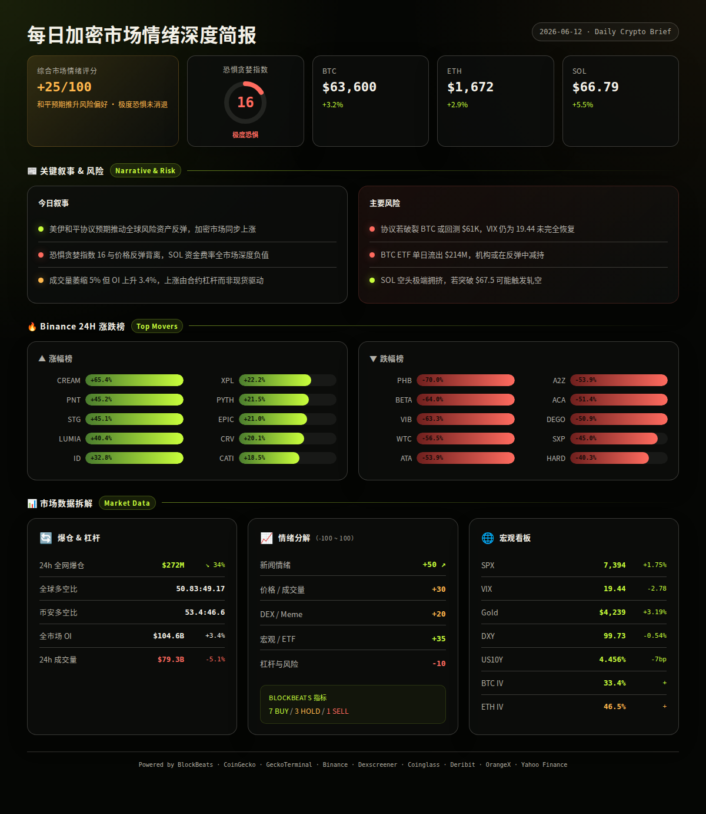
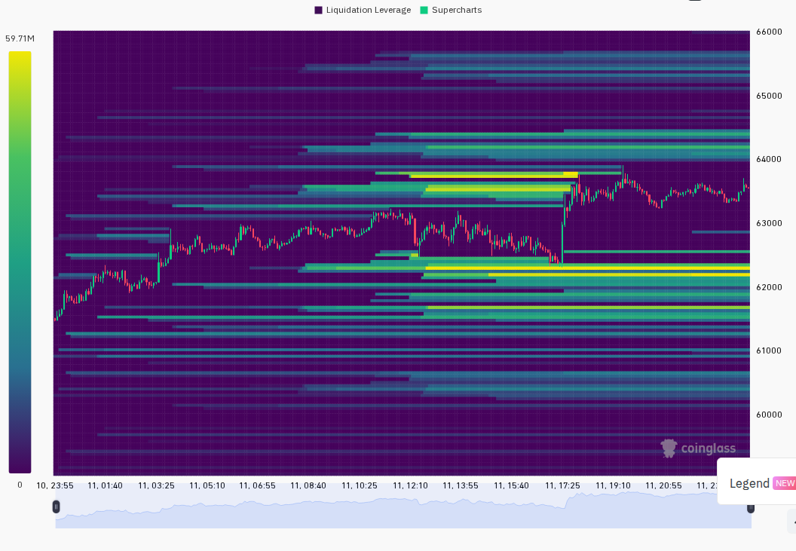
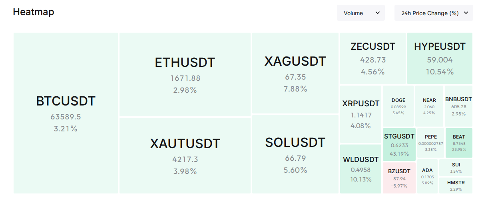

美伊和平协议预期主导全球风险资产强劲反弹，加密市场跟随美股同步上涨，但恐惧贪婪指数仍停留在极度恐惧 16，显示市场信心修复远落后于价格回升。F&G 与价格之间出现显著背离，历史上此类情境往往是筑底信号或假突破分水岭，需密切关注和平协议最终落地情况。(BlockBeats, OrangeX, analysis)
24h变化: 情绪 +5(较昨日) | BTC ↗3.2% | ETH ↗2.9% | SOL ↗5.5% | VIX 19.44(正常) | 成交量 ↘5.1% | 爆仓 ↘34.5% (multi-source)
BTC / ETH / SOL
信息 1: BTC 从 $61,812 反弹至 $63,600，在美伊和平消息后出现单小时 +1.8% 急拉，随后温和回落高位盘整，成交量在冲高后明显萎缩。(Binance)
信息 2: SOL 领涨主流币 +5.5%，24h 振幅 5.9% 为三者最大，但永续合约资金费率全交易所深度负值（Binance -0.009%、Gate -0.011%、CoinW -0.014%），显示大量空头堆积。(CoinGecko, Binance)
ETF / 宏观 / 监管
信息 3: 特朗普宣布取消对伊朗打击行动，称和平协议预计本周末签署，伊朗媒体评估文本获批概率高。美股随即大涨，纳斯达克单日涨幅超 2.5%，半导体指数暴涨 8%。(BlockBeats)
信息 4: BTC ETF 最新数据显示 6 月 10 日净流出 -$213.9M，IBIT 流出 -$148.5M，但此前连续多月 ETF 累计净流入超 $102B，机构仓位仍在高位。(BlockBeats)
信息 5: CME FedWatch 显示市场定价美联储加息概率达 69%，加息预期被推迟至明年 1 月。DXY 自 100.27 降至 99.73（-0.54%），美债 10Y 收益率自 ~4.53% 降至 4.456%（-7bp），为典型的宏观避险消退+风险偏好回升组合。(BlockBeats)
DeFi / 安全事件
信息 6: NFT 抵押借贷平台 NFTfi 宣布将于 8 月 31 日关闭前端并停止运营，反映 NFT 赛道寒冬仍在持续。(BlockBeats)
信息 7: Coinbase 推出 AI Agent 工具，支持 AI Agent 执行交易和支付，机构级 AI 自动化交易时代开启。(BlockBeats)
Meme / 小市值代币
信息 8: Spacecoin (SPACE) 首次进入 CoinGecko 热搜前 15（排名第 12），SpaceX IPO 狂热溢出至加密市场，SOL 链上多个 SPCX/SOL 交易对 24h 成交超千万美元，但价格波动极大（+92% 至 -87% 不等）。(CoinGecko, GeckoTerminal)
预测市场 / Polymarket
信息 9: Polymarket 上世界杯预测市场新增 $478K 押注，新钱包「athelstan」买入巴西、比利时等国家夺冠仓位。俄罗斯占领 Lyman 预测市场出现两地址精准做空（买 NO），概率约 50.5%。(BlockBeats)
融资 / VC
信息 10: Digital Asset（Canton 网络开发商）完成 a16z crypto 领投的 $355M 融资，参投方包括 Abu Dhabi 投资局、Apollo、BNP Paribas、Citadel、Coinbase Ventures、Polychain 等传统+Crypto 双阵容，公司已实现盈利。(BlockBeats)
信息 11: Tether 确认领投德国机器人公司 NEURA Robotics C 轮 $1.4B，估值约 €4B，显示 Tether 正将稳定币利润大规模布局 AI 机器人赛道。(BlockBeats)
交易所 / 机构
信息 12: Binance 推出 bStocks 功能，上线 CRCLB、MUB 等代币化股票交易对，试图在代币化证券赛道挑战 Hyperliquid 的 24/7 美股交易优势。(BlockBeats)
信息 13: SpaceX IPO 零售认购额已突破 $1000 亿，BlackRock 下单至少 $50 亿，航天主题 ETF 暴涨（NASA +7.81%）。(BlockBeats)
板块轮动
风险 1: 美伊和平协议仍处于「预期阶段」，尚未正式签署。特朗普历史上多次反转，若协议破裂将引发剧烈避险回撤。→ 观察: 若周末协议正式签署则风险偏好延续；失效条件: 若谈判再度破裂，BTC 可能回测 $61,000-62,000。(BlockBeats, analysis)
风险 2: 恐惧贪婪指数 16（极度恐惧）与价格反弹形成显著背离。历史上类似背离或为筑底信号，但也可能预示上涨缺乏散户参与基础。→ 观察: 若 F&G 在未来 2-3 日回升至 25+，则确认情绪修复；失效条件: 若 F&G 继续低迷而价格回落，则本次反弹为熊市陷阱。(OrangeX, analysis)
风险 3: SOL 全交易所资金费率深度负值，空头拥挤度极高，若 SOL 继续上行可能触发大规模空头挤压（short squeeze），推动 SOL 快速冲高后大幅波动。→ 观察: 若 SOL 突破 $67.5 且资金费率未回升，则轧空概率上升；失效条件: 若资金费率快速回升至中性，则轧空风险解除。(CoinGecko, analysis)
风险 4: BTC ETF 最新单日出现 $213.9M 净流出，为近期较大规模流出，需警惕机构资金是否在反弹中减持。→ 观察: 若本周剩余交易日 ETF 恢复净流入，则单日流出为噪声；失效条件: 若 ETF 连续 3 日以上流出，则机构态度转向谨慎。(BlockBeats, analysis)
风险 5: 永续合约 OI 上升 +3.44% 而成交量下降 -5.08%，量价背离暗示上涨缺乏现货买盘支撑，更多由合约杠杆推动。→ 观察: 若成交量在明日亚洲时段放量，则趋势健康；失效条件: 若 OI 继续上升而成交量萎缩，则杠杆驱动的上涨不可持续。(Coinglass, analysis)
风险 6: Binance 24h 跌幅榜出现多个 -50% 至 -70% 的小币种（PHB -70%、BETA -64%、VIB -63%），低流动性代币仍在去杠杆，资金向大市值集中。→ 观察: 若 BTC.D 突破 57% 则确认避险主导模式；失效条件: 若山寨币跌幅收窄且成交量回升，则轮动开始。(Binance, analysis)
非财务建议声明: 本报告仅提供市场数据和情绪分析，不构成任何买卖建议。
6 月 12-14 日 — 美伊和平协议预期签署窗口 — 若签署：强烈看涨；若推迟：中性偏空 (BlockBeats)
6 月 12 日 — 美股期权月度到期 — 中性偏波动，VIX 可能受压制 (analysis)
6 月 13 日 — NEAR Protocol 激励空投快照（$70M TVL 目标）— NEAR 生态看涨 (BlockBeats)
6 月 16 日 — SpaceX IPO 定价预期公布 — 航天/科技主题情绪外溢至加密 (BlockBeats)
6 月 17-18 日 — FOMC 会议（6 月）— 若维持利率不变 + 鸽派措辞，看涨；若暗示加息，强烈看跌 (analysis)


=== 第二段：数据与技术面 ===
综合评分: +25/100 (↗+10 较昨日)
市场处于「坏消息中的好消息」模式——宏观地缘政治改善推动反弹，但情绪面尚未跟进，各项指标呈现分裂状态。
5 项分项评分:
新闻情绪: +50/100 ↗+20 — 美伊和平协议取消战争尾部风险，全球股市暴涨，宏观叙事全面转向积极。(BlockBeats)
价格/成交量: +30/100 ↗+10 — BTC/ETH/SOL 全线反弹，但成交量萎缩 5.1%，属缩量反弹。(CoinGecko, Coinglass)
DEX/meme 活跃度: +20/100 ↗+5 — Solana 链上多个 SPCX 交易对活跃，但总体趋势池仍以跌为主，新池质量不足。(GeckoTerminal, Dexscreener)
宏观/ETF/流动性: +35/100 ↗+10 — DXY 跌破 100、美债收益率下行、VIX 回落至正常区间，但 ETF 最新单日净流出值得警惕。(BlockBeats, Yahoo Finance)
杠杆与风险: -10/100 ↗+5 — OI 上升但资金费率整体偏负，SOL 空头极端拥挤，爆仓量下降显示去杠杆阶段性完成。(CoinGecko, Binance, Coinglass)
BlockBeats 市场脉动指数完整分解（11 项指标）:
· 市场脉动指数: 无值 — 综合情绪指数，<20 潜在买入机会 (BlockBeats)
· 整体市场流动性指数: Buy — 市值加权的市场主力控盘成本指标 (BlockBeats)
· 比特币流动性指数: Hold — 比特币主力控盘成本指标 (BlockBeats)
· 以太坊流动性指数: Buy — 以太坊主力控盘成本指标 (BlockBeats)
· 过去24小时累积比特币流动性指数: Buy — 24h LIQ 累计 (BlockBeats)
· 整体市场流动性（以比特币为单位）: Buy — 订单簿 bid-ask 差值 (BlockBeats)
· 合约多空比偏离指数: Sell — 头部币种 OI 加权多空比偏离 14 日均值 (BlockBeats)
· 山寨币抗跌指数: Hold — 市场回调时寻找安全边际进场 (BlockBeats)
· Bitfinex BTC/USD 溢价: Hold — Bitfinex vs Coinbase 溢价关系 (BlockBeats)
· USDC/USDT 溢价: Buy — USDC 相对 USDT 溢价 (BlockBeats)
· Binance USDT 借贷利率: Buy — 借贷利率 <10% 倾向底部 (BlockBeats)
· 持仓量加权资金费率年化利率: Buy — 各大平台加权资金费率 (BlockBeats)
综合: 7 Buy / 1 Sell / 3 Hold — 多数底层指标指向买入区域，但多空比偏离发出卖出警告，情绪面存在内在矛盾。(BlockBeats)
BTC: $63,600，24h +3.2%，成交量 $10.9 亿（USDT），24h 区间 $61,812-$63,933。蜡烛行为：前半日窄幅整理后单小时爆量冲高（+1.8%），随后高位缩量盘整。溢价指数：标记价 $63,573 低于指数价 $63,603（-0.05%），期货小幅贴水。(Binance, CoinGecko)
ETH: $1,672，24h +2.9%，成交量 $4.63 亿（USDT），24h 区间 $1,629-$1,694。蜡烛行为：与 BTC 同步，冲高后高位震荡，上影线较短显示卖压有限。溢价指数：标记价 $1,671 低于指数价 $1,672（-0.06%）。(Binance, CoinGecko)
SOL: $66.79，24h +5.5%，成交量 $1.89 亿（USDT），24h 区间 $63.67-$67.42。蜡烛行为：涨幅最大，下午时段急拉后高位震荡，动能最强。溢价指数：标记价 $66.77 低于指数价 $66.81（-0.06%）。(Binance, CoinGecko)
全球: 总市值 $2.26T，24h 交易量 $79.3B，BTC 市占率 56.33%。(CoinGecko)
衍生品杠杆: BTC 总 OI $54.7B，最高费率交易所 Bybit +0.0085%，最低费率 Binance -0.0015%。ETH 总 OI $32.0B，最高 BYDFi +0.01%，最低 MEXC -0.0022%。SOL 总 OI $6.15B，最高 Bybit +0.01%，最低 CoinW -0.0142%。SOL 全交易所资金费率普遍为负，空头拥挤度高于 BTC/ETH。(CoinGecko)
爆仓数据: 24h 全市场爆仓 $2.72 亿，较前日减少 34.48%，多头爆仓占比约 50.83%（接近 50:50），未见单边碾压。(Coinglass)
多空比: 全球 LS 50.83:49.17（近乎均衡），Binance 大户 LS 53.4:46.6（大户略偏多）。两者差异不大，整体市场多空格局中性。(Coinglass)
跨平台 OI: 最新日 Binance $17.4B / Bybit $9.0B / Hyperliquid $5.84B，Binance 仍占主导但 Hyperliquid 保持第三大衍生品平台。(BlockBeats)
宏观看板: SPX 7,394.30（+1.75%），VIX 19.44（-12.5%，正常区间），DXY 99.73（24h -0.54%，7d 趋势下行），US10Y 4.456%（24h -7bp），黄金 $4,239.40（+3.19%）。BTC 与 SPX 同步上涨（风险偏好模式），与黄金同涨（+3.2% vs +3.2%），显示 BTC 同时吸收风险资产和避险资产双重资金流。(Yahoo Finance, BlockBeats)
期权波动率: BTC ATM IV 33.4%（低波动），ETH ATM IV 46.5%（正常）。ETH-BTC IV 利差 +13.1pp，接近 15pp 的 altcoin 投机溢价阈值，但尚未触发。BTC IV 33.4% 显著低于 VIX 19.44 对应的隐含波动，显示期权市场对 BTC 的尾部风险定价偏低。(Deribit)
筛选标准: CoinGecko 热搜 ∩ 24h 涨幅 >+5% ∩ 可验证 DEX 流动性。以下为分析观察列表，非买入建议。
STG (Ethereum): $0.6614, 24h +54.2%, 市值约 $1.7 亿。DEX: 流动性 $1.39M, 24h 成交量 $2.77M, 买卖比 1019:939。催化剂: Stargate Finance 跨链桥协议治理代币，可能与 LayerZero 生态新进展有关。风险: 单日暴涨后获利盘压力大，买卖比压力均等。(CoinGecko, Dexscreener, Binance)
VELVET (Base): $1.57, 24h +76.5%, 市值排名 87。DEX: 流动性 $7.39M, 24h 成交量 $165.9K, 买卖比 8846:9065。催化剂: CoinGecko 热搜第 2 名，Base 生态代币。风险: DEX 成交量偏低（$166K），价格发现不充分，波动可能剧烈。(CoinGecko, Dexscreener)
XPL (Plasma): $0.0754, 24h +22.7%, 市值约 $137M。DEX: 流动性 $2.44M, 24h 成交量 $711K, 买卖比 2031:1604。催化剂: Plasma Network 主网或生态进展，Binance 现货涨幅第 6。风险: 买盘略多于卖盘但差距有限。(CoinGecko, Dexscreener, Binance)
PYTH (Solana): $0.0378, 24h +21.3%, 市值约 $340M。DEX: 流动性 $250K, 24h 成交量 $664K, 买卖比 3341:2550。催化剂: Pyth Network 预言机生态扩张。风险: DEX 流动性偏低，主要交易量在 CEX。(CoinGecko, Dexscreener, Binance)
PENGU (Solana): $0.0343, 24h 变动不显著（DEX），市值约 $1.3B。DEX: 流动性 $44.3M, 24h 成交量极低。催化剂: Pudgy Penguins NFT 生态+代币化叙事。风险: 热搜驱动型代币但链上交易极度冷清。(CoinGecko, Dexscreener)
· GeckoTerminal Solana 趋势池（24h 成交量 >$1M 前 3）:
· 1B / USDC: 24h 成交量 $4.28M，价格变化 +411.1% — 注意极端波动 (GeckoTerminal)
· KINS / SOL: 24h 成交量 $3.44M，价格变化 +22.2% (GeckoTerminal)
· Gaejook / SOL: 24h 成交量 $2.63M，价格变化 -96.7% — 疑似 rug (GeckoTerminal)
· GeckoTerminal Solana 新池（48h）: 无满足条件（>$50k 流动性 + >$100k 24h 成交量）的新池。(GeckoTerminal)
· GeckoTerminal 高质量近期池（<72h, >$100k 流动性 + 成交量）:
· CDOF / SOL: 流动性 ~$355K, 24h 成交量 ~$39M, 价格变化 +242% (GeckoTerminal)
· SPCX / SOL（多池）: 流动性 $187K-$359K, 24h 成交量 $35M-$98M, 价格波动 -87% 至 +92% — SpaceX IPO 叙事驱动但波动极端 (GeckoTerminal)
· BlockBeats Solana 链上净流入 Top 5:
· CBBTC: 净流入 $928K (BlockBeats)
· SYRUPUSDC: 净流入 $839K (BlockBeats)
· ONYC: 净流入 $433K (BlockBeats)
· SPCX: 净流入 $287K — SpaceX 概念 (BlockBeats)
· WBTC: 净流入 $285K (BlockBeats)
概率加权情景分析（未来 24-48 小时）:
情景 1 (概率: 50%, 置信度: 高): 美伊和平协议正式签署，全球风险偏好延续。加密市场跟随美股上行，BTC 测试 $64,500-$65,000 阻力区间，ETH 跟随至 $1,700-$1,740，SOL 因空头挤压效应可能弹性最大，目标 $68-$70。关键条件: 周末前协议文本确认 + 美股不出现回撤。若发生则 BTC目标: $64,800, ETH: $1,720。(analysis)
情景 2 (概率: 30%, 置信度: 中): 协议延迟但未破裂，市场进入等待模式。BTC 在 $62,500-$64,000 区间横盘整理，ETH 在 $1,640-$1,690 盘整。SOL 因空头拥挤可能出现较大振幅但无方向性突破。关键条件: 协议谈判继续但无明确时间表。若发生则 BTC目标: $63,200, ETH: $1,660。(analysis)
情景 3 (概率: 20%, 置信度: 中): 协议破裂或出现地缘政治恶化。BTC 快速回吐涨幅，回测 $60,500-$61,500 支撑。ETH 跌回 $1,580-$1,620，SOL 因空头集中获利了结回落至 $63-$64。关键条件: 特朗普再次反转或伊朗强硬派阻挠协议。若发生则 BTC目标: $61,000, ETH: $1,600。(analysis)
总结: 当前市场处于「极端恐惧 + 宏观利好」的矛盾状态，价格已先于情绪做出反应。历史上此类背离后续 60% 概率为持续反弹（情绪追赶价格），40% 概率为假突破（价格回归情绪）。关键变量是美伊协议实际落地进度。以上为基于当前数据的概率判断，不构成交易建议。